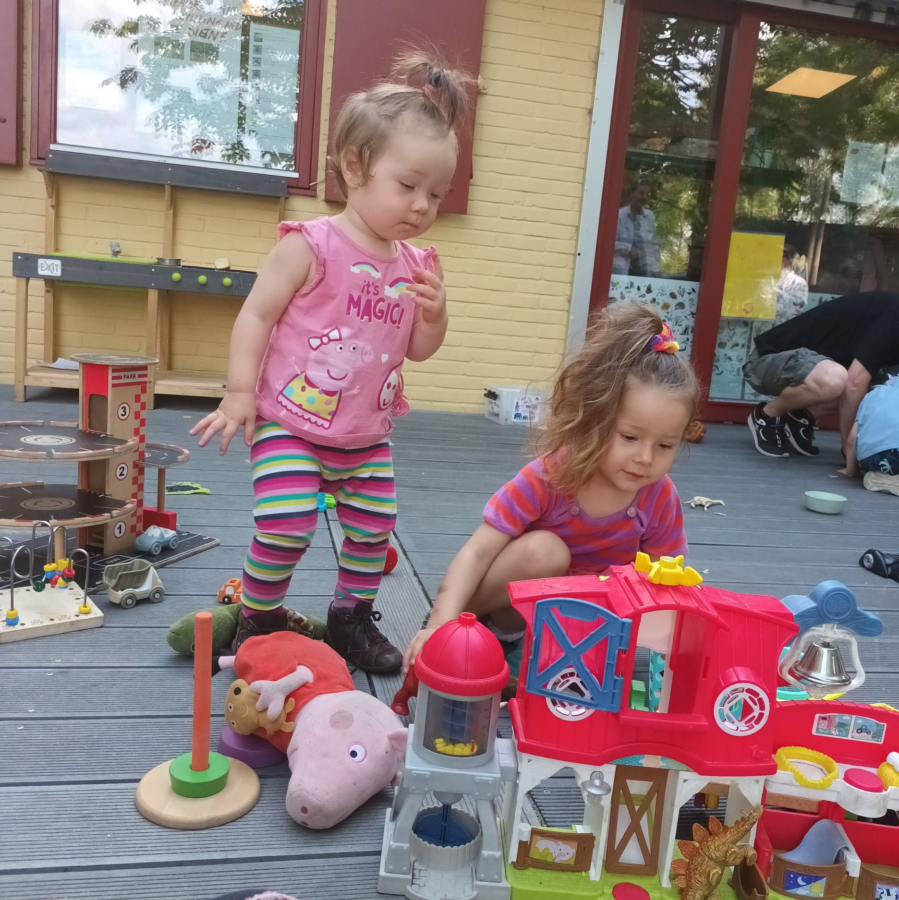

Hi, earthlings! So here I am, without internet at 23:44. It was a rough day with the toddlers, and I am falling asleep.
2 days ago, I signed up for the #100DaysOfCode challenge, and my idea was to start building my very own Ecommerce platform for the vintage items I sell on my Etsy shop, The Retro Rat Etsy. The reason behind is that the last months, my sales have been increasing, and so are Etsy fees. Therefore I need to find my own way to sell my products, so that I don't depend on Etsy anymore and I suffer from their high fees.
The articles sold are mostly rare finds and collectibles, and normally their prices range from 50 EUR to 399 EUR. Yep, not cheap stuff.
Now, going back to the challenge. The idea is that I write code everyday during 100 days for at least 2 hours, and I document it. I am indeed documenting this amazing journey on GitHub account. How awesome is that?
I have taught myself some HTML and CSS. However, for the last months, my life has been quite difficult in this new city that I need to review some knowledge, as well as learning new skills
And, as I have already mentioned, I am the mother of two toddlers of 3 and 1, and OMG, that's pretty hardcore!
These are my girls, Luna and Sunna. Aren't they lovely and wonderful?

At the moment, I am taking Meta's front end development course offered by Coursera.
I was fortunate enough to receive finacial aid= free course!
So, I was in The Netherlands, stranded. I lost my passport on a short trip to Amsterdam. I noticed 2 days after, and I was in complete shock! I had to travel to Berlin soon to start a new chapter in my life. My new passport with a German visa.
I was lucky to have free accommodation in a huge house though, and while I waited more than a month for this passport, I improvised melodies and a song was born : " Aventurera del Sur, les digo que la vida, la vida es una cancion". I jotted it down and I recorded it on my computer.
I still have to ask my friend Robinson, to lend me a hand to record itthe way it should be.
By then, October 2014, I was thinking about all the adventures I have lived in the countries I have visited and stayed.
A song conforted me.
I am certain, travellers and expats will identify with the intensity of experiences lived abroad. I guess sometimes we feel like in our own movie.